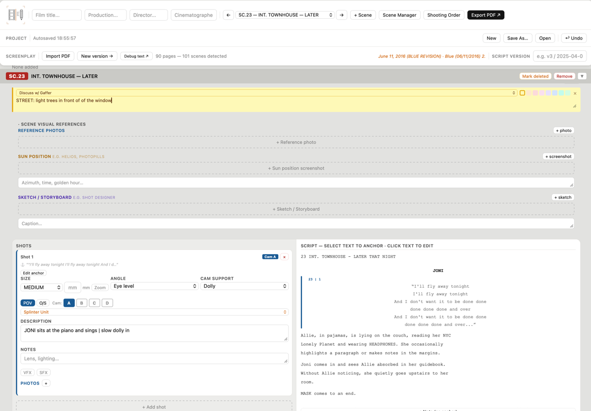
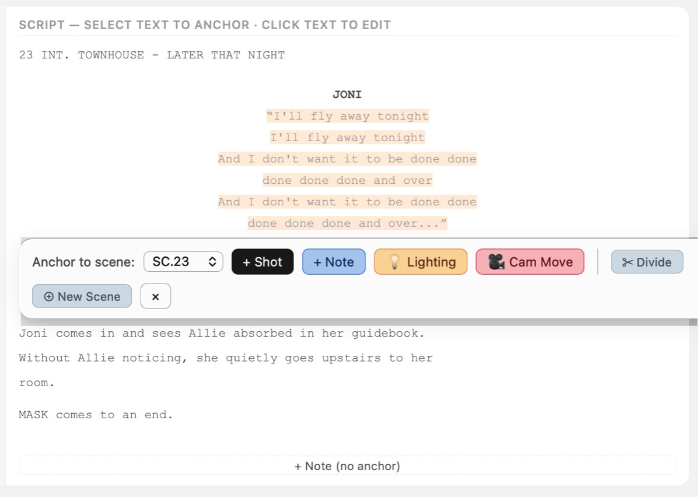
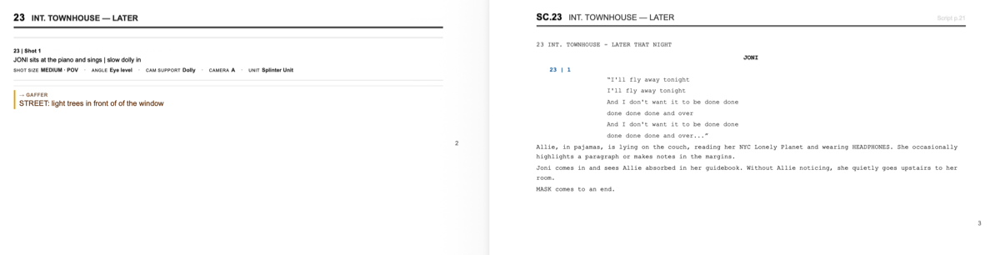

The visual idea meets the technical reality.
CINEside is where creative vision becomes production logistics.
Deliberately understated.
CINEside is not a visual presentation tool. It doesn't need to create a mood — your images do that. The interface stays out of the way so you can focus on what matters: the script, the ideas, the preparation.

What it does:
A shot planning tool built by a cinematographer, for cinematographers. Import your screenplay as PDF — exported from Final Draft or any other screenwriting app — and CINEside automatically detects your scenes. Plan your shots scene by scene, always with the script on the right and your shots and notes on the left.

Features:
- Import screenplays as PDF from any screenwriting application
- Anchor shots to specific passages in the script
- Attach reference photos, location images, sun position diagrams, sketches and storyboards
- Notes for specific departments — Gaffer, Art Dept., Costume, Make Up, Key Grip and more
- Export your complete shooting script as PDF
- Shooting Order — drag and drop shots into production order
- Separate VFX and SFX shot lists for post production
- Collaborate with your director via CINEside CONNECT

No AI. No magic. Just your work.
CINEside doesn't generate ideas, suggest shots, or have an opinion about your visual language — that's entirely yours.
What it does: keeps your preparation organized. Collect everything you need to discuss with your director and every department. Track decisions, open questions, technical requirements — shot by shot, scene by scene. When you work on the schedule or talk through the next shooting day with your AD, select the scenes, drag and drop the shots into order — fresh every time — and export as PDF.
All the prep work in one place — the script, the shots, the notes, the references. Nothing more, nothing less.

CINEside for Mac — €25
Download / Buy
Download / Buy

CINEside CONNECT for Mac — FREE
Share your shooting script with your director. They add notes and send it back. Read-only. Works completely offline — your script never has to visit a cloud.
Download
Share your shooting script with your director. They add notes and send it back. Read-only. Works completely offline — your script never has to visit a cloud.
Download